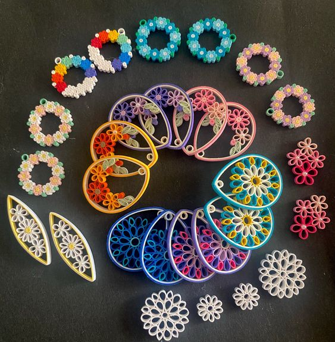

Introduction
In a world where colors danced on the tips of fingers and imagination took flight, there was an art form unlike any other. It was the art of paper quilling, where thin strips of paper became vessels for creativity and self-expression.In the hands of an artist, a blank canvas transformed into a realm of possibilities. The artist would delicately select vibrant paper strips, each one holding a promise of beauty. With nimble fingers and a steady touch, they would roll the paper, coaxing it into intricate coils and graceful scrolls.
As the quilled shapes multiplied, a tapestry of color and form emerged. The artist would carefully arrange the quilled elements, harmonizing them into a symphony of shapes and patterns. Flowers bloomed, their petals unfolding with grace and elegance. Butterflies took flight, their delicate wings unfurling in a dance with the air. Landscapes materialized, capturing the essence of nature's beauty in the delicate curves of paper.But paper quilling was not just about the final product; it was a journey of discovery. It required patience, as each coil was meticulously shaped and placed, and perseverance, as mistakes were turned into opportunities for innovation....
When the quilling masterpiece was complete, it radiated with a unique aura. It whispered stories of dedication and passion, inviting viewers to explore its intricate details. Each quilled creation was a testament to the human capacity for transformation, turning ordinary materials into extraordinary works of art.In the hands of an artist, paper quilling became an enchanting dance, a dance that breathed life into paper, that weaved dreams into reality, and that reminded us of the extraordinary beauty that could be found in the simplest of materials.
History
Techniques
Quilling, the art of creating designs from rolled, shaped and glued strips of paper, is an extremely popular craft at the moment. The design possibilities are endless and can be achieved with just a few basic quilling tools. Once you have your basic paper quilling tools you’ll be able to achieve hundreds of unique patterns and designs that you can use on cards and home decor projects. As well as your quilling papers, which come in a huge variety of colours and various widths, you only need a quilling tool, glue, scissors, tweezers and a quilling board to get you started. As well as ther are so many advancsed quilling tools. You’re likely to have some of these in your craft stash already.
Paper Quilling Tools
The slotted tool is the most important quilling tool as it makes curling coils much easier and faster. Bird feather quills can be used as slotted tools, and this is where the word 'quilling' comes from.The quality of the coil is noticeably higher compared to a coil that was curled with a toothpick or hand.

Create perfect borders and shapes for your quilled designs. Contains the square, circle and triangle border buddy with an interchangeable handle.
Quilling paper is one of the most important materials you'll need when it comes to quilling. There's a huge range of them on the market and you can choose whatever colour suits your crafting theme. These quilling papers come in 36 colours so are ideal for someone starting out in quilling.
Basic Shapes of Quilling
Paper quilling is an amazing and fun art of making beautiful shapes and patterns using paper strips. You can make many projects using basic quilling shapes. Paper strips are rolled, coiled, and shaped to create the pattern. It is a versatile craft with minimum requirements. All you need is a few supplies and lots of creativity. A quilling or paper filigree is an art form that involves the use of strips of paper that are rolled, shaped, and glued together to create decorative designs.
How To Do
You can quickly roll up a greeting card or spend hundreds of hours manipulating pieces of paper into intricate paper mosaics or sculpture. How you use the craft and what you make is up to you and how much time you want to spend (and perhaps how much patience you have), but the overall concept always begins with the same thing: rolled paper shapes.
For beginners, I recommend using 1/4″ wide quilling paper. The wider width gives you more to grip and it is easier to manipulate. Once you have the shapes mastered, you will find it much easier to quill with narrower strips if you wish. Let's see how to make open and closed coils.Simple circles are the first shapes you’ll learn, as they are the base for most other shapes you’ll create.
Step 01
To begin, insert a piece of quilling paper into the slot of your quilling tool. Try to get the edge of the paper and the edge of the slot to line up as perfectly as you can. Using a slotted tool will naturally leave a small crimp in the center of your coil, but if you allow the paper to hang over the edge of the tool, the crimp will be much more visible.
Step 02
Roll the tool with your dominant hand either towards your body or away from it; whichever feels most comfortable to you. Hold the strip taught with your other hand.
Step 03
To make a closed coil, as you near the end of the strip, place a small amount of glue near the end of the strip and roll to complete. When you remove it from the tool, do not allow it to expand — that’s what keeps it tight.
Step 04
To make an open coil, remove the coil from the tool and allow the coil to expand. Once it has fully expanded, add the dab of glue and press the strip down carefully to secure.
Step 05
Now you can adjust these coil to any shape as your choice creativly.
Progress of an art...
Quilling Projects
Quilling Wall Art
Quilling designs for wall art involve creating decorative pieces that can be framed or directly mounted on walls. These designs often feature intricate patterns, shapes, and motifs, such as flowers, animals, landscapes, or abstract compositions.
Quilling 3D miniatures
Quilling 3D miniatures require more advanced techniques compared to traditional flat quilling designs. The artist uses a combination of rolling, shaping, and layering techniques to build up the miniature object. It involves creating individual quilled components, such as coils, scrolls, teardrops, or petals, and assembling them together to form the final three-dimensional shape.
Creating quilling 3D miniatures requires patience, precision, and a strong understanding of quilling techniques. It is a challenging but rewarding form of quilling that allows artists to push the boundaries of their creativity and produce stunning, intricate pieces of art.

Quilling Greeting Cards
Quilling is popular for making personalized greeting cards. It allows for the creation of three-dimensional designs, adding depth and texture to the cards. Quilled greeting cards often feature flowers, butterflies, hearts, or other shapes that can be customized for different occasions, such as birthdays, weddings, or holidays.
Quilling Accessories
Quilling can be used to create unique and delicate Accessories. These can include earrings, pendants, necklaces, bracelets,rings brooches, and keychains. These designs often showcase intricate patterns and vibrant colors, allowing individuals to express their personal style through wearable art.The paper strips are shaped into intricate coils, scrolls, or other designs and then coated or sealed to add durability.

Quilling Home Decor
Quilling designs can be used to enhance home decor items such as photo frames, mirrors, lampshades, and decorative boxes. These designs can be tailored to match specific themes or color schemes, providing a unique and personalized touch to interior spaces.

Subscribe Our Monthly Quilling Magazine...
About Us
Hi friends! I'm Quilling Happy Cat and this is my Paper Quilling web site. I am really interested in the art of paper quilling. So I was starting collect quilling items and the images of quilling items when I were a high school student. However within the time making paper quilling become a hobby of mine.So I decided to create a webpage about the art of paper quilling. For those who are following this website, can get a good knowledge and high level atttraction about paper quilling.
So, if you want get the more information about quilling please don't hesitate to contact me. I will help you with the best of my experiences and I also can cordinate you with my friends who are expering in paper quilling.
Happy Quilling..!!